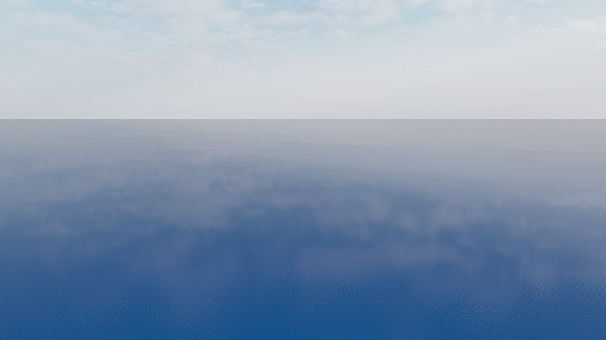
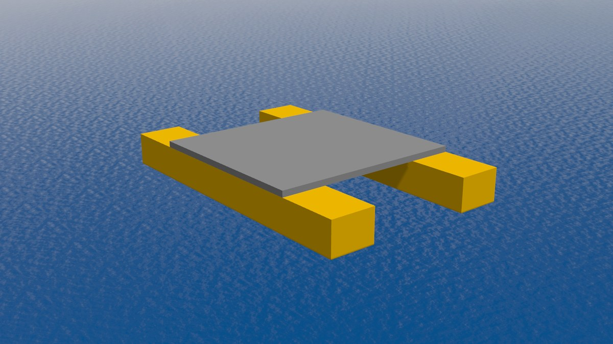
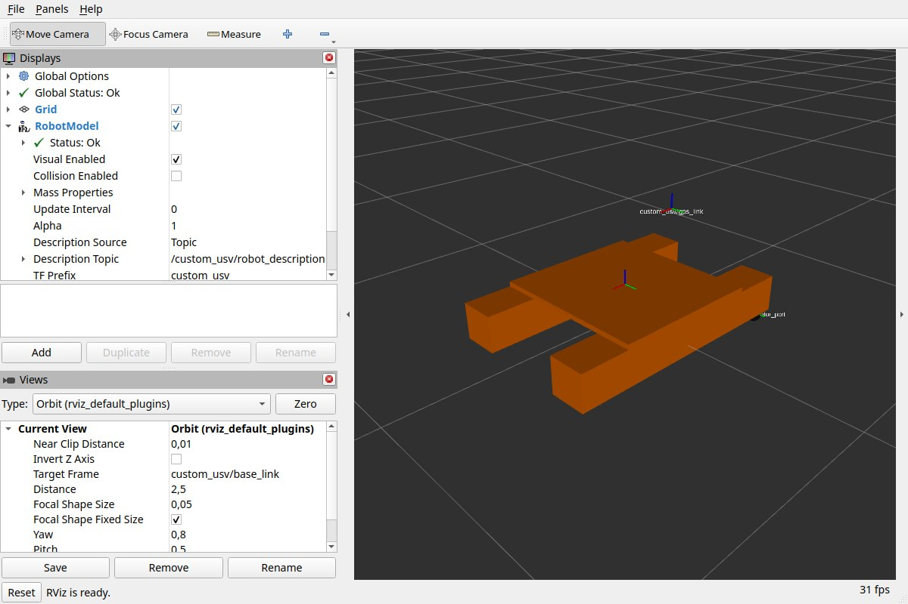

First simulation
Start the ocean, put the custom USV on it, and drive it. Run every command
in a terminal where you sourced ~/maritime_ws/install/setup.bash.
1. The ocean on its own
ros2 launch kai_bringup simulation.launch.xml

The open_water world at its default, calm sea state.
Gazebo opens the open_water world: a calm sea, a sky and nothing else. No
vehicle is part of this world; vehicles are added to it. Stop it with
Ctrl+C before the next step.
2. Put a boat on it
ros2 launch kai_custom_vehicle sim.launch.xml

The custom USV floating at its waterline.
The custom USV is a 1 m catamaran made for these docs. The world file doesn’t mention it: the boat’s own model marks the shapes that float it (how that works).
Check it from a second terminal:
gz model -m custom_usv -p # z close to 0: floating at the waterline
ros2 topic list | grep custom_usv # propeller commands and sensors
3. Drive it
Each propeller takes a command between -1 and 1: the fraction of its full thrust to apply, 1 full ahead, -1 full astern, 0 stop. It keeps the last command it got until a new one arrives. Drive with one terminal per propeller, both sourced, and start the second right after the first.
Terminal 1, the port propeller:
ros2 topic pub -r 5 /custom_usv/motor_port/cmd std_msgs/msg/Float64 "{data: 0.25}"
Terminal 2, the starboard propeller:
ros2 topic pub -r 5 /custom_usv/motor_stbd/cmd std_msgs/msg/Float64 "{data: 0.25}"
The boat turns for the moment only one propeller pushes, then moves straight
ahead. Two different values turn it. To stop, Ctrl+C both, then send 0.0
once to each:
ros2 topic pub --once /custom_usv/motor_port/cmd std_msgs/msg/Float64 "{data: 0.0}"
ros2 topic pub --once /custom_usv/motor_stbd/cmd std_msgs/msg/Float64 "{data: 0.0}"
Warning
Commands latch: a propeller keeps its last command until it gets a new
one. Ctrl+C alone does not stop the boat, 0.0 does; and the longer the
second command waits, the further the boat turns before it goes straight.
4. Look at it in RViz
ros2 launch kai_custom_vehicle rviz.launch.xml

The custom USV in RViz, on the config the launch writes for it.
RViz shows the boat and its frames. In a simulation every frame carries the
boat’s name (custom_usv/base_link) and the description is published in
the boat’s namespace, so the launch starts RViz on a config pointed at that
instance, with simulation time. For another boat, pass its name:
name:=boat_b.
5. Add a second boat
While the first one runs, put another on the ocean from a new terminal. gz-maritime’s spawn launch takes a name and the vehicle’s three files:
ros2 launch kai_bringup spawn_vehicle.launch.xml name:=boat_b y:=4 \
xacro:=$(ros2 pkg prefix --share kai_custom_vehicle)/models/custom_usv/model.sdf.xacro \
bridge:=$(ros2 pkg prefix --share kai_custom_vehicle)/config/ros_gz_bridge.yaml.in \
urdf:=$(ros2 pkg prefix --share kai_custom_vehicle)/urdf/custom_usv.urdf.xacro
A second, identical boat appears 4 m to the left of the first, and the
command returns once it is in: its bridge and state publisher run inside
the simulation’s process. Each boat has its own topics, so the same two
terminals as in step 3, on boat_b’s topics, drive only that boat.
Terminal 1:
ros2 topic pub -r 5 /boat_b/motor_port/cmd std_msgs/msg/Float64 "{data: 0.25}"
Terminal 2:
ros2 topic pub -r 5 /boat_b/motor_stbd/cmd std_msgs/msg/Float64 "{data: 0.25}"
A third boat is the same spawn command with another name.
6. Make waves
The sea state can change while the simulation runs, from 0 (glassy) to 9:
gz service -s /world/default/wave/set_parameters --reqtype gz.msgs.Param \
--reptype gz.msgs.Boolean --timeout 2000 \
--req 'params {key: "sea_state" value {type: INT32 int_value: 3}}'
The waves pass through the hulls instead of lifting the boats. That is expected for now: the boats float on the flat water level, and the moving surface is only drawn. See Waves and physics today.
Next
The custom USV: its topics, frames and files.
Bring your own vehicle: build a vehicle like it.